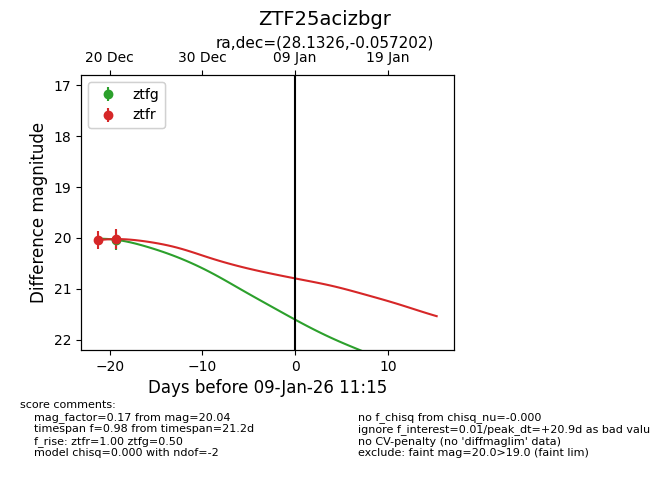
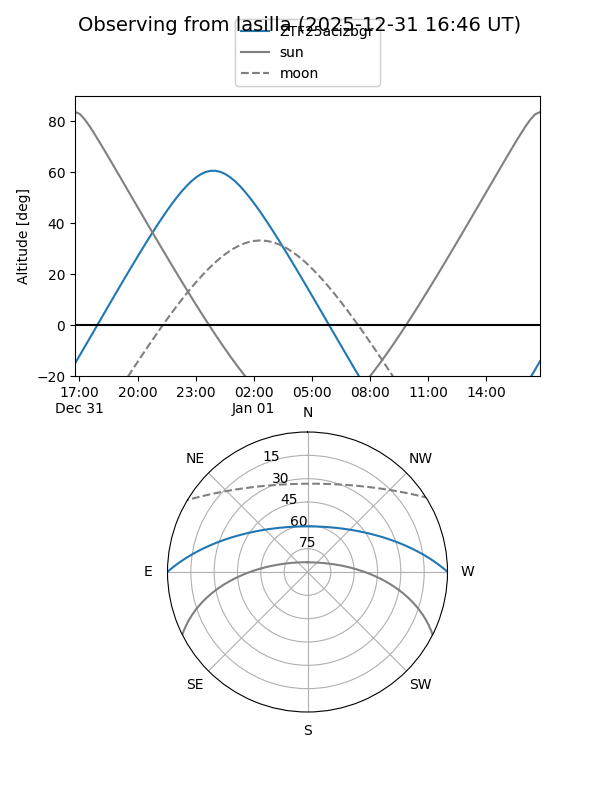
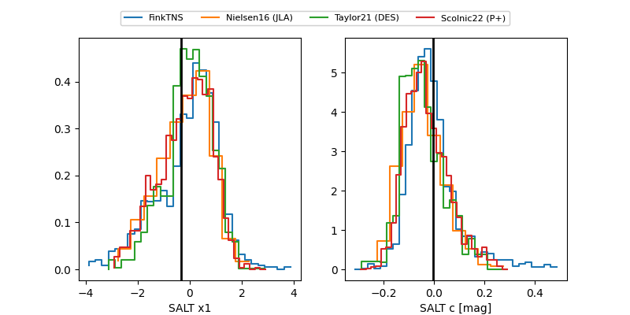

ZTF25acizbgr
Target ZTF25acizbgr at 2025-12-31 18:00
Aliases and brokers:
FINK: link
Lasair: link
ALeRCE: link
alt names
ZTF25acizbgr (ztf,fink_ztf)
Coordinates:
equatorial (ra, dec) = 28.1326,-0.05720
equatorial (HMS+DMS) = 01:52:31.83,-00:03:25.93
galactic (l, b) = (153.8983,-59.20553)
Flags:
Photometry:
last ztfg=20.04, ztfr=20.02
1 ztfg, 2 ztfr detections
Lightcurve

Visibility


Additional plots
